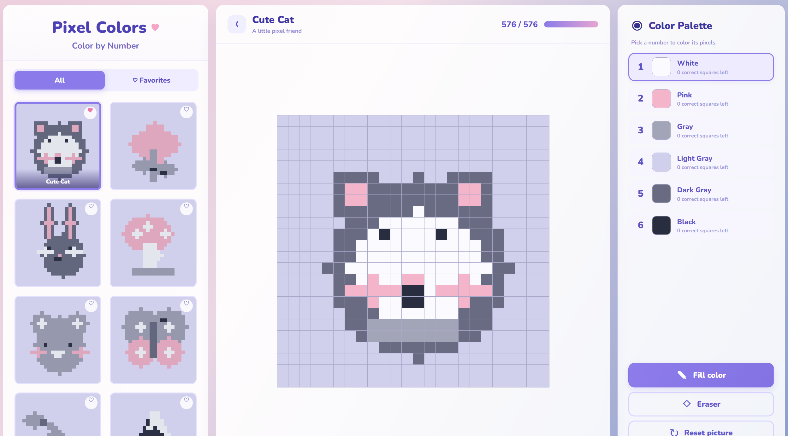

01
Personal project
Pixel Colors — Color by Number
October 2026
An interactive pixel-art coloring game where users fill a grid with colors to complete each picture. Built with a focus on simple interactions, a clean interface, and a relaxing user experience.
JavaScript
HTML
CSS
UI Design

Try the project